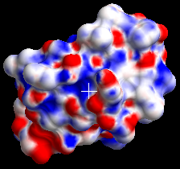
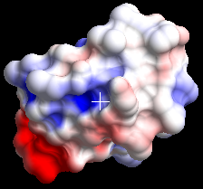

APBS ElePot
APBSを使った静電ポテンシャルマップの計算と表示¶
CueMol2からAPBS(http://www.poissonboltzmann.org/apbs)を使って，まあまあある程度は手軽に静電ポテンシャルマップを計算することができます．
必要なソフトウェアのインストール¶
まず，cuemol2/APBS_Installを参照し必要なソフトウェアをインストールしてください
分子の読み込みと分子表面の生成¶
次に，静電ポテンシャルを計算する分子を読み込みます．
さらに，表示のための分子表面を作成しておきます．(msmsを使用した分子表面の作成参照)
APBS toolの設定¶
次に，メニュー「Tools」→「APBS elepot calculation...」を実行すると，APBS tool dialogが表示されます．

APBSの設定¶
まず，"APBS exe path:"にinstallしたAPBSの実行ファイルを指定します．
"Change..."ボタンを押すとファイルを開くダイアログが現れるので， そこからcuemol2/APBS_InstallでインストールしたAPBS.exe(あるいはMacOSXではapbs)ファイルを指定してください．
Windowsの場合¶
CueMol2 2.1.0 (Windows版のみ)以降では，APBSが付属しています．CueMol2を
C:\Program Files (x86)\CueMol 2.0
にインストールした場合は，APBS.exeは
C:\Program Files (x86)\CueMol 2.0\apbs\APBS.exe
にインストールされています． デフォルトでは上記のファイルが指定されているはずですが， そうなっていないようなら，上記のファイルを指定してください．
MacOS Xの場合¶
cuemol2/APBS_Installに書かれている通りに/Applicationにインストールした場合は，"APBS exe path:"に，
/Application/APBS.app/Contents/MacOS/apbs
を指定してください．（他の場所にインストールした場合は，/Applicationの部分を適宜変えてください）
計算targetの指定¶
次に，"Target molecule:"で，計算するtarget分子を指定します． 右横のdropdown listboxから分子を指定してください．
selectionの指定¶
Target moleculeの下に，"Selection:"というチェックボックスがありますが， 分子の全体ではなく，一部分に対して計算を行う場合は， これをONにして計算対象を指定します．
分子表面の生成同様に，水分子やイオンなどは除いて計算するのが普通だと思うので，proteinなど，そういう選択を指定してください． 例として用いている1CRN (crambin)はもともとPDBファイル中に タンパク分子しか含まれていないので， defaultのままでOKです．
生成するpotential object名の指定¶
"Elepot name:"では，生成するpotential object名を指定します． Defaultでは，"pot_"+計算対象分子名 となっていますが，それ以外にも変更可能です．
名前が他のobjectとかぶると後でsurfaceの着色に用いたりする場合に面倒なことになるので， 必ずuniqueな名前を付けるようにしてください．
電荷計算方法の指定¶
"Charge calculation method"では，静電ポテンシャルを計算するための 電荷の割り当て方法を指定します．
PDB2PQR¶
"Use PDB2PQR"の方をクリックすると，PDB2PQRを使用して電荷・原子半径割り当て，水素原子付加が行われます． （使用前にcuemol2/APBS_Installを参考にPDB2PQRをインストールしてください）
- Charge calculation methodのところの，Use PDB2PQRをonにして，
-
pdb2pqr.py path:にインストールしたpdb2pqr.pyファイル（あるいはpdb2pqr_wrap.batファイル）を指定します．
"Change..."ボタンを押すとファイルを開くダイアログが現れるので，そこからファイルを選択し，指定してください． -
あとさらに，"Force field:"では電荷の割り当て等に用いる力場セットを指定できますが， charmmのままで問題ないと思います．
Windowsの場合¶
CueMol2.1.0以降(Windows版)あるいはcuemol2/APBS_Installにあるzipファイルに含まれる pdb2pqr簡易版を使用する場合は， "pdb2pqr.py path:"にはpdb2pqr_wrap.batというバッチファイルを指定してください．
- 注意
- CueMol2.1.0以降(Windows版)に含まれるpdb2pqr簡易版は，CueMol2を
C:\Program Files (x86)\CueMol 2.0
にインストールした場合は，
C:\Program Files (x86)\CueMol 2.0\apbs\pdb2pqr_wrap.bat
にインストールされます． デフォルトでは上記のファイルが指定されているはずですが， そうなっていないようなら，上記のファイルを指定してください．
MacOS Xの場合¶
cuemol2/APBS_Installに書かれている通りに/Applicationにインストールした場合は，"pdb2pqr.py path:"に，
/Application/pdb2pqr-osx-bin-X.X/pdb2pqr
を指定してください．（.pyが無いことに注意，X.Xはバージョン番号です． 他の場所にインストールした場合は，/Applicationの部分を適宜変えてください）
その他¶
PDB2PQRのサイトからダウンロードして最新版をインストールした場合は，上記のpdb2pqr.py path:には文字通りpdb2pqr.pyを指定します．
Internal method¶
"Use internal method"にすると，CueMol2の電荷割り当て機能が使用されます．
こちらはpdb2pqrをインストールしなくてよいので簡単なのですが， タンパクのN末端やC末端が正しく扱われなかったり， PDBファイルに水素原子が無い場合は， 生やすのではなく， 水素が付いている原子に電荷だけ足し合わせるという， 結構いい加減な方法で割り当ててしまうので， あまり使用はお勧めできません．
PDBファイル中に既に水素原子がある場合は，"Use hydrogen atoms"をonにしておくと 上記の足し合わせてしまう問題は回避されるので， 若干はましになるでしょう．
他のオプション¶
以下Optionsの部分にapbsのいくつかのoptionが指定できるようになっていますが， 通常は変える必要はないでしょう． 詳しくは，apbsのdocumentを参照してください．
計算の実行¶
以上の設定を終えてOKボタンを押せば計算が始まります． 特に分子が大きい場合は，APBSだけでなく，PDB2PQRの実行にもかなり時間がかかります． 気長に待ちましょう．
CueMol2 2.1.0以降では，log windowに計算結果のログが表示されます．
計算が終わると，Sceneパネルに静電ポテンシャルオブジェクトが追加されます．
{kind=link}
上図では，pot_1CRNというポテンシャルオブジェクトが追加されています． デフォルトでポテンシャルオブジェクトにはunitcell rendererが作成されるようになっていますが，これは下図のように静電ポテンシャルマップが計算されている範囲を線で示しています．
{kind=link}
一度範囲が十分だったか確認できれば，後は普通いらないと思うので，隠すなり消すなりしてください．
分子表面への着色¶
次に，分子表面への着色表示の方法を説明します． まず，Colorパネルを表示し， パネル中一番上のdropdown listboxから， 着色するべきmolsurf rendererを選択してください(この場合はsf_1CRN/molsurf1)．
DefaultではCPKColoringになっているので，dropdown listboxの右にある三角印をクリックし，出てくるメニューの中から"Electrostatic potential"を選びます． すると，以下のようなパネルが表示されます． （Colorパネルの一般的な使い方はDocuments/GUIのチュートリアル(CueMol2)/Step7を参照）

Defaultでは，Solvent Excluded Surface (SES)，すなわち溶媒分子の球と，タンパク質原子の球の境界の部分（すなわち図の表面部分）のポテンシャルにしたがって着色されます． しかし，これでは電荷がある原子核に近すぎるため，ポテンシャルは表面電荷と似たようになる傾向が出てしまい，まだらでぱっとみ分布がよく分からない変な着色になってしまいます．

"Color by SAS"というチェックボックスがありますが，これをonにすると，分子表面が，Solvent Accessible Surface (SAS)，すなわち溶媒分子の球の中心に相当する部分（すなわち図の表面部分から1.4Å離れた点）のポテンシャルにしたがって着色されるようになります．

上図では，"Color by SAS"をonにし，さらにHigh, Lowの値(defaultでは10, -10)を2と-2に変更しています． ちなみにHigh, Lowの値の単位はkT/eになっています．
計算したpotential objectについて¶
シーンをqscファイルに保存すると， 計算したpotential objectは， qscファイル中にバイナリー形式で埋め込まれ， 一緒に保存されます． そのため，次回再度CueMolを起動して読み込んだ場合も，保存時と同様に表示されるはずです．